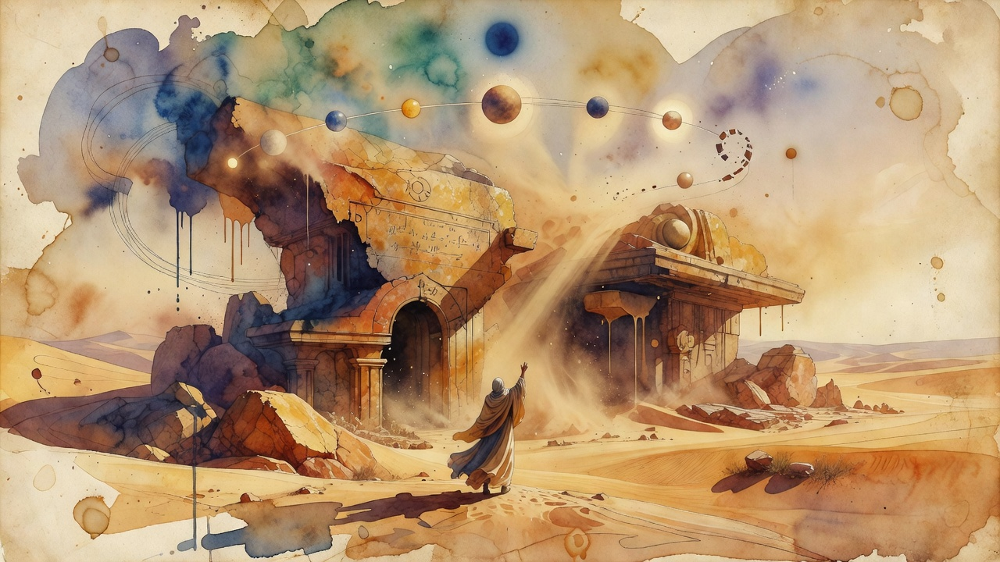

Math Milestone
OpenAI model clears 100+ open math problems, shrugs off Navier-Stokes
An internal OpenAI model has resolved more than 100 long-standing open mathematics problems, including the Navier-Stokes Millennium Prize problem. OpenAI is standing up an independent advisory group hosted at the Institute for Advanced Study to guide how such results are reviewed and communicated.